Risk graphs — Monday, November 9, 2026
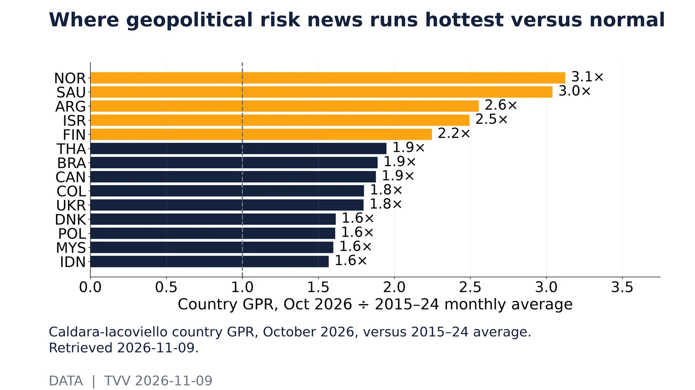
Where geopolitical risk news runs hottest versus normal. Caldara-Iacoviello country GPR, October 2026, versus 2015–24 average. Retrieved 2026-11-09.Source: https://www.matteoiacoviello.com/gpr_files/data_gpr_export.xls 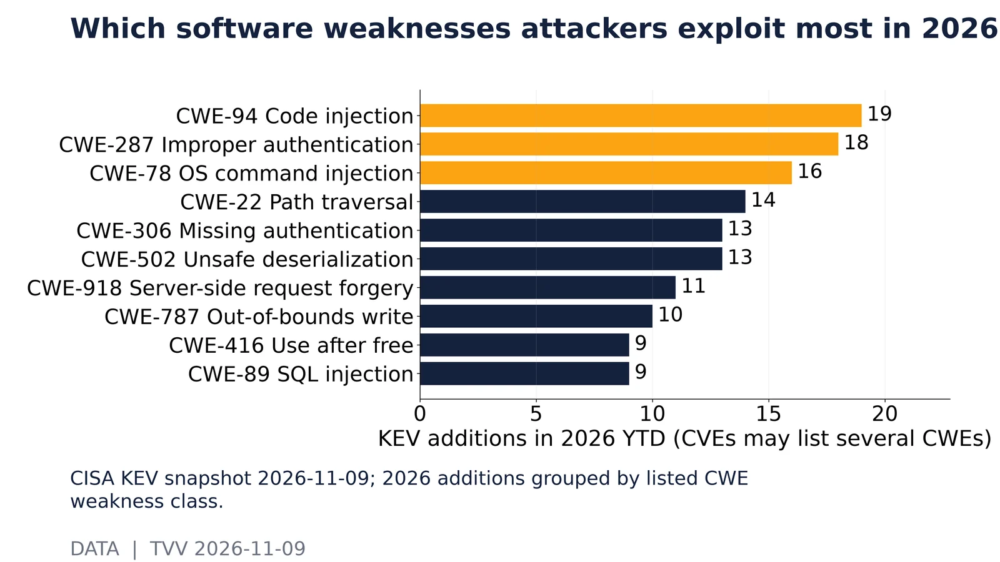
Which software weaknesses attackers exploit most in 2026. CISA KEV snapshot 2026-11-09; 2026 additions grouped by listed CWE weakness class.Source: https://www.cisa.gov/sites/default/files/feeds/known_exploited_vulnerabilities.json 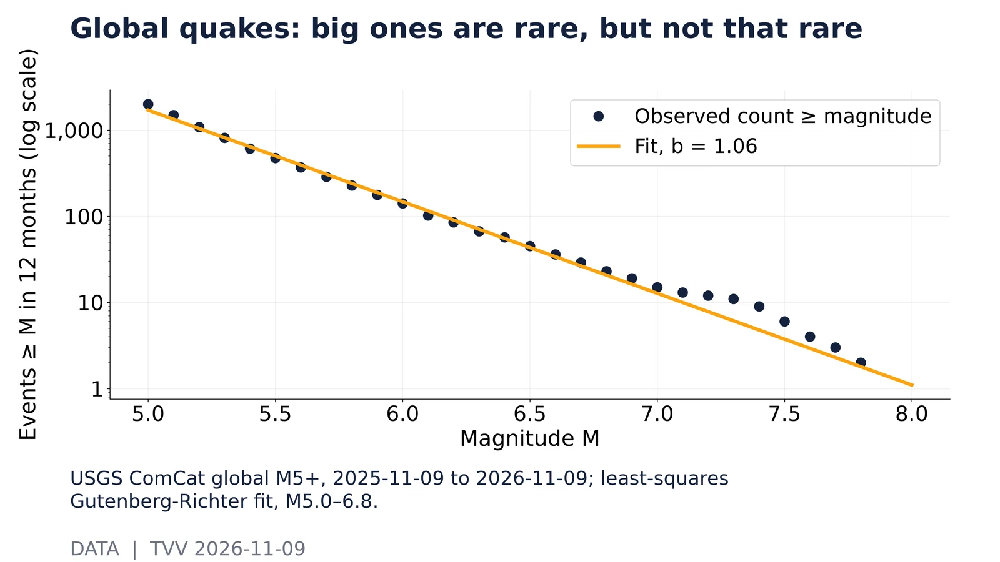
Global quakes: big ones are rare, but not that rare. USGS ComCat global M5+, 2025-11-09 to 2026-11-09; least-squares Gutenberg-Richter fit, M5.0–6.8.Source: https://earthquake.usgs.gov/fdsnws/event/1/query?format=geojson&starttime=2025-11-09&endtime=2026-11-09T12:00:00&minmagnitude=5 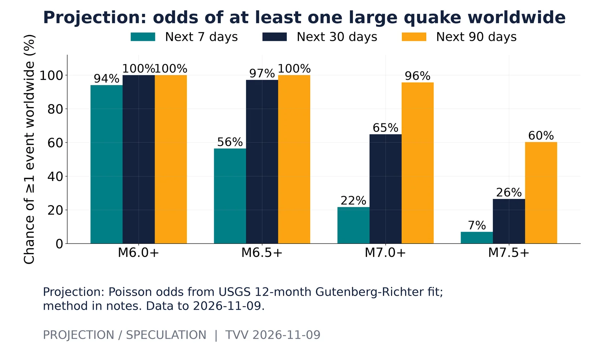
Projection: odds of at least one large quake worldwide. Projection: Poisson odds from USGS 12-month Gutenberg-Richter fit; method in notes. Data to 2026-11-09.Source: https://earthquake.usgs.gov/fdsnws/event/1/query?format=geojson&starttime=2025-11-09&endtime=2026-11-09T12:00:00&minmagnitude=5 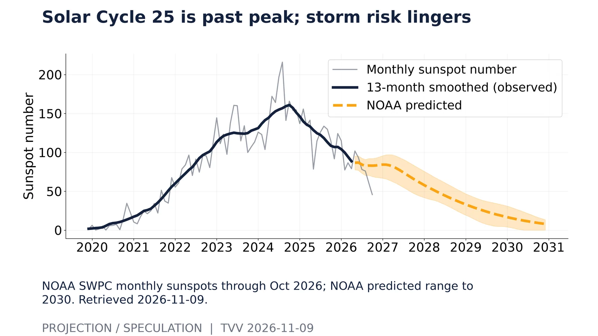
Solar Cycle 25 is past peak; storm risk lingers. NOAA SWPC monthly sunspots through Oct 2026; NOAA predicted range to 2030. Retrieved 2026-11-09.Source: https://services.swpc.noaa.gov/json/solar-cycle/observed-solar-cycle-indices.json 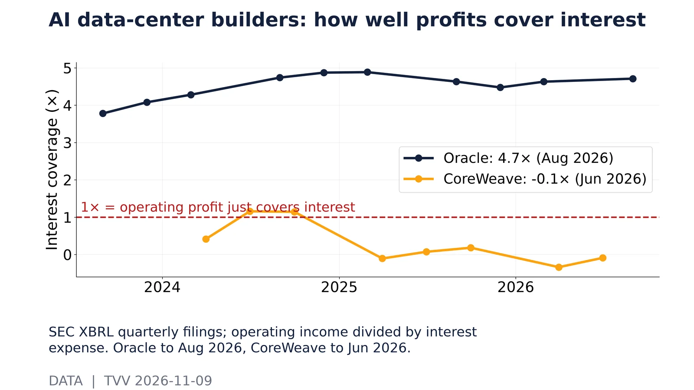
AI data-center builders: how well profits cover interest. SEC XBRL quarterly filings; operating income divided by interest expense. Oracle to Aug 2026, CoreWeave to Jun 2026.Source: https://data.sec.gov/api/xbrl/companyfacts/CIK0001341439.json 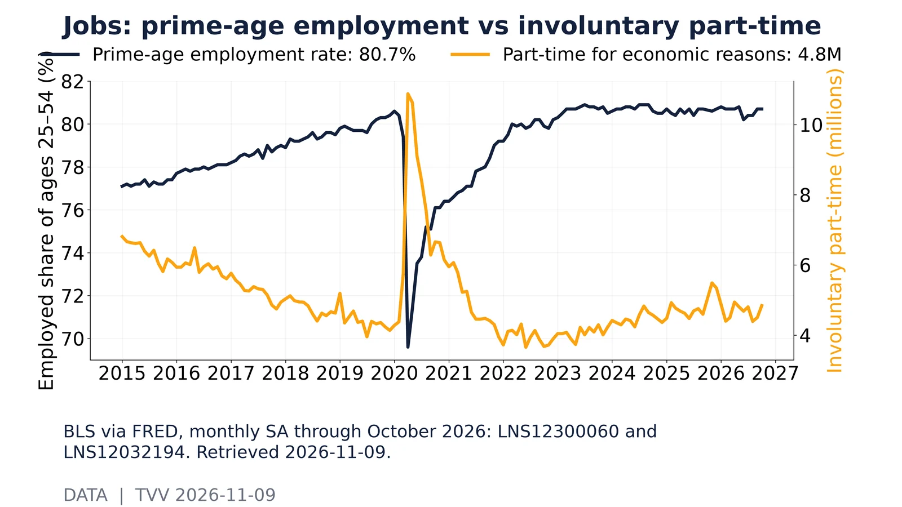
Jobs: prime-age employment vs involuntary part-time. BLS via FRED, monthly SA through October 2026: LNS12300060 and LNS12032194. Retrieved 2026-11-09.Source: https://fred.stlouisfed.org/series/LNS12300060 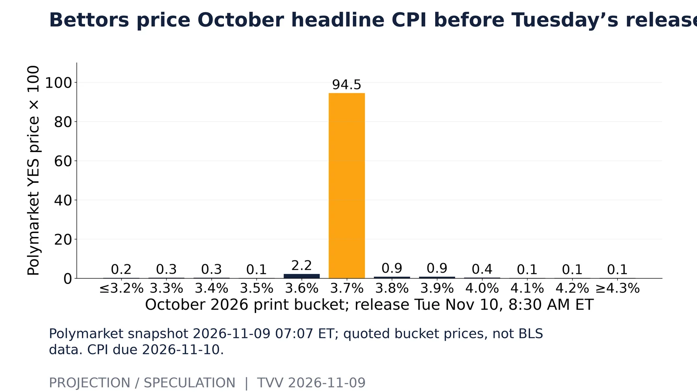
Bettors price October headline CPI before Tuesday’s release. Polymarket snapshot 2026-11-09 07:07 ET; quoted bucket prices, not BLS data. CPI due 2026-11-10.Source: https://polymarket.com/event/october-inflation-us-annual 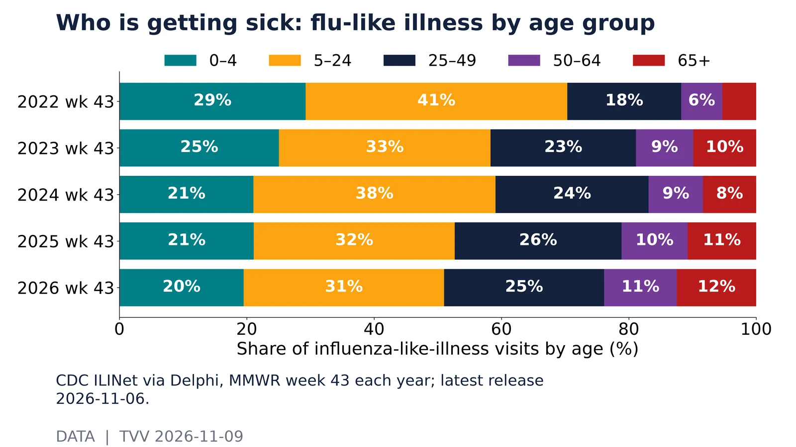
Who is getting sick: flu-like illness by age group. CDC ILINet via Delphi, MMWR week 43 each year; latest release 2026-11-06.Source: https://api.delphi.cmu.edu/epidata/fluview/?regions=nat&epiweeks=202240-202645 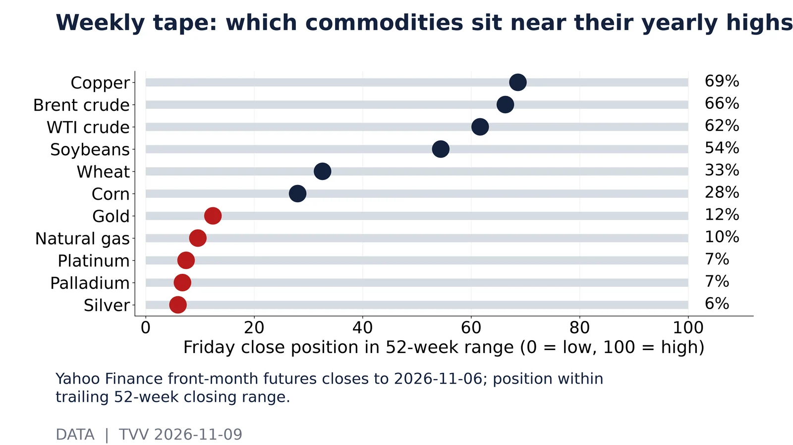
Weekly tape: which commodities sit near their yearly highs. Yahoo Finance front-month futures closes to 2026-11-06; position within trailing 52-week closing range.Source: https://query1.finance.yahoo.com/v8/finance/chart/GC=F?range=2y&interval=1d 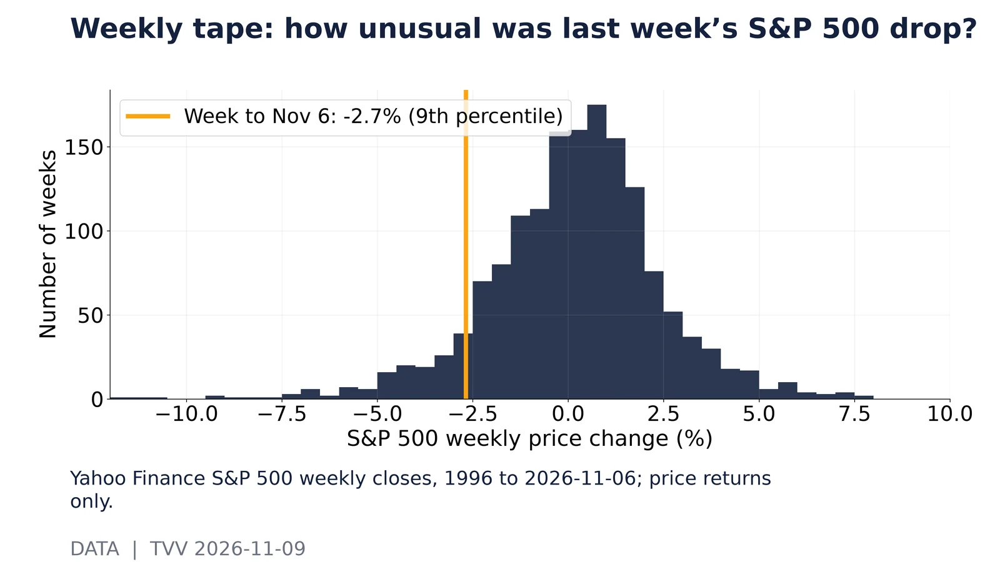
Weekly tape: how unusual was last week’s S&P 500 drop?. Yahoo Finance S&P 500 weekly closes, 1996 to 2026-11-06; price returns only.Source: https://query1.finance.yahoo.com/v8/finance/chart/%5EGSPC?range=30y&interval=1wk 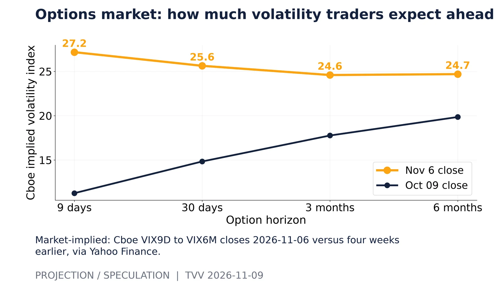
Options market: how much volatility traders expect ahead. Market-implied: Cboe VIX9D to VIX6M closes 2026-11-06 versus four weeks earlier, via Yahoo Finance.Source: https://query1.finance.yahoo.com/v8/finance/chart/%5EVIX?range=3mo&interval=1d 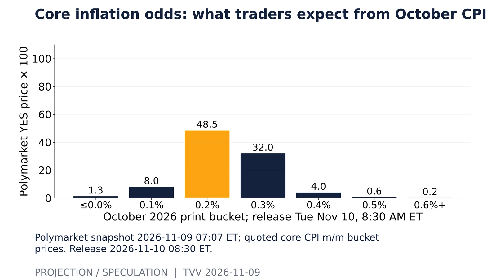
Core inflation odds: what traders expect from October CPI. Polymarket snapshot 2026-11-09 07:07 ET; quoted core CPI m/m bucket prices. Release 2026-11-10 08:30 ET.Source: https://polymarket.com/event/core-cpi-mom-october-2026 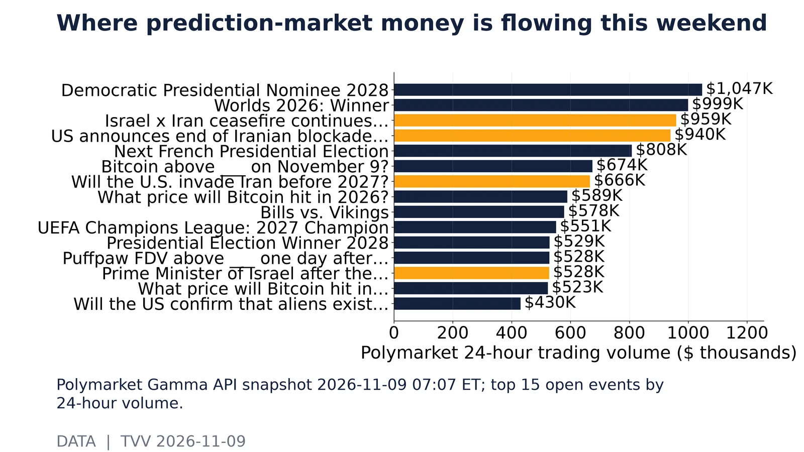
Where prediction-market money is flowing this weekend. Polymarket Gamma API snapshot 2026-11-09 07:07 ET; top 15 open events by 24-hour volume.Source: https://gamma-api.polymarket.com/events?active=true&closed=false&order=volume24hr&ascending=false&limit=40 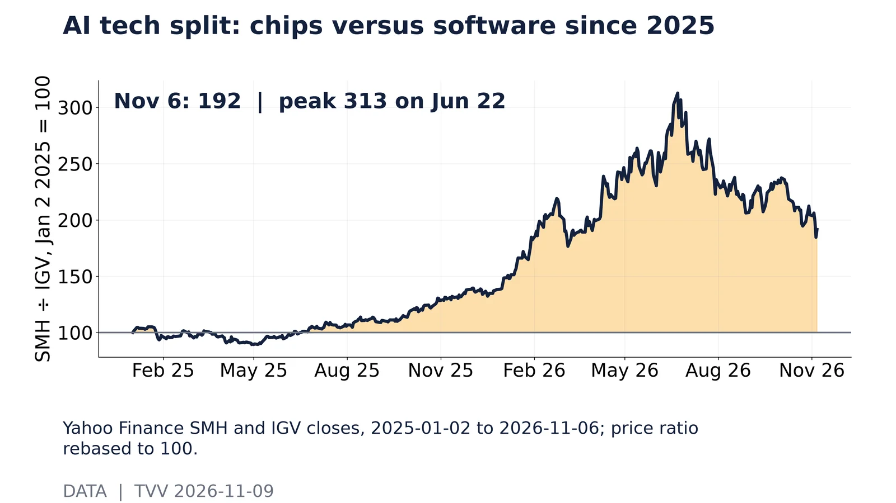
AI tech split: chips versus software since 2025. Yahoo Finance SMH and IGV closes, 2025-01-02 to 2026-11-06; price ratio rebased to 100.Source: https://query1.finance.yahoo.com/v8/finance/chart/SMH?range=2y&interval=1d 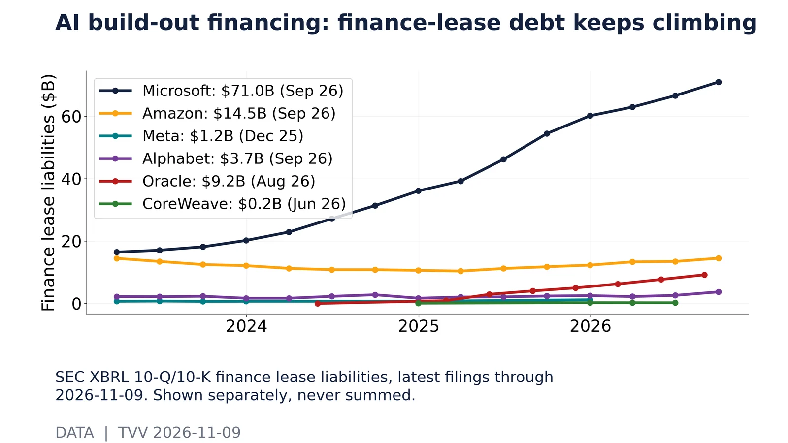
AI build-out financing: finance-lease debt keeps climbing. SEC XBRL 10-Q/10-K finance lease liabilities, latest filings through 2026-11-09. Shown separately, never summed.Source: https://data.sec.gov/api/xbrl/companyfacts/CIK0000789019.json 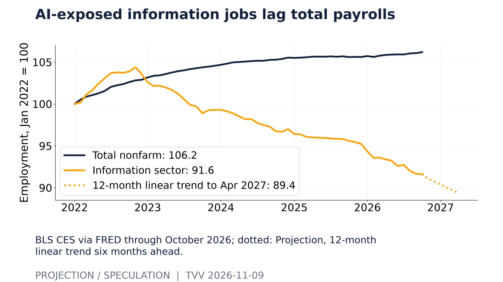
AI-exposed information jobs lag total payrolls. BLS CES via FRED through October 2026; dotted: Projection, 12-month linear trend six months ahead.Source: https://fred.stlouisfed.org/series/USINFO